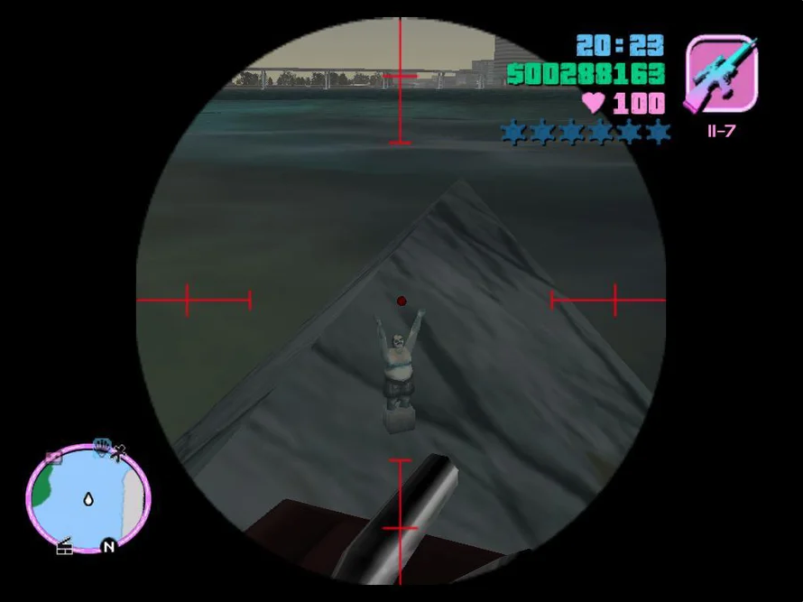
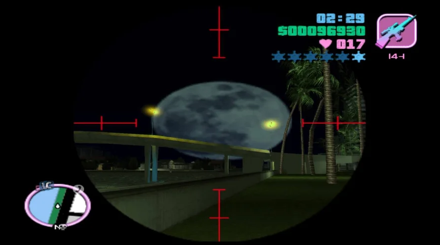
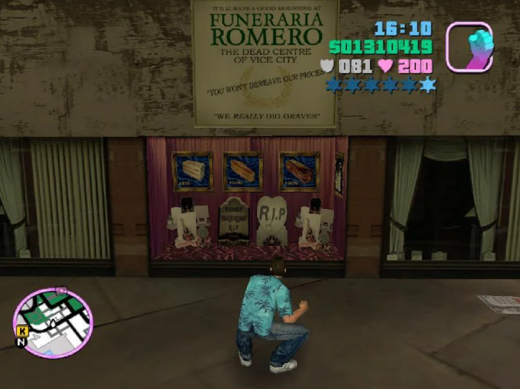
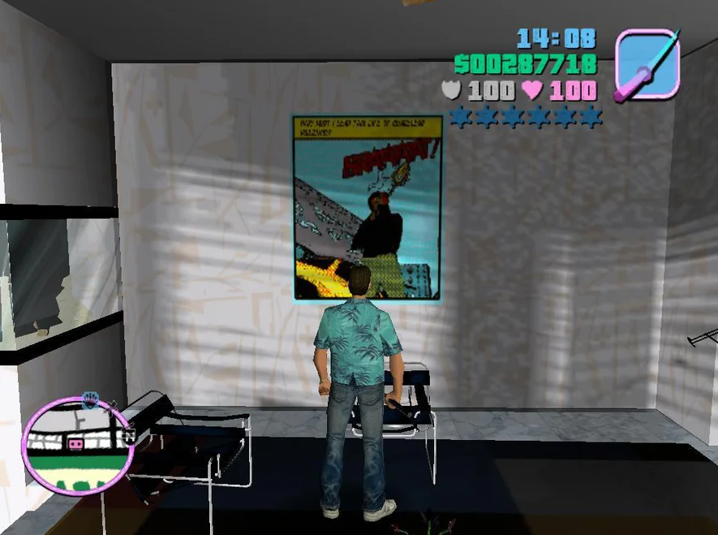
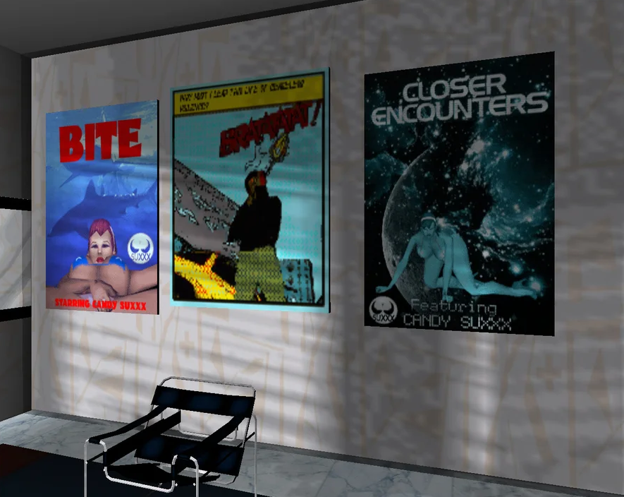
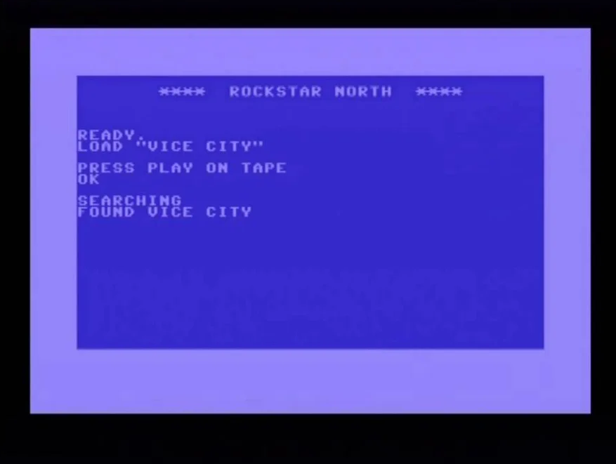
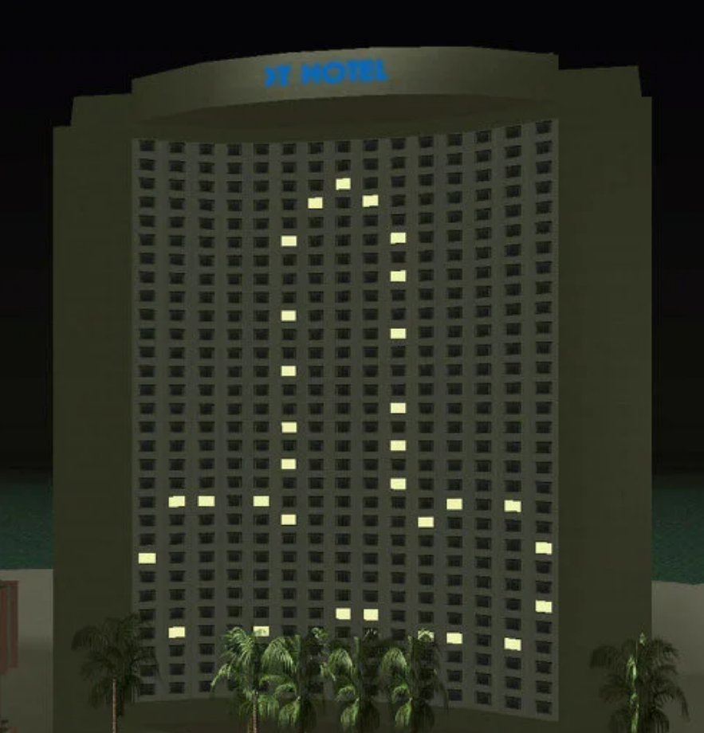

Самое обсуждаемое

Когда вам дадут возможность плавать на лодке, плывите к Гольф-Клубу, и в воде, между Гольф-Клубом и Литтл-Гаити, вы можете увидеть бедолагу, на которого надели цементные ботинки, после отправили на дно.
Очень странное свойство имеет местная луна. Если ночью прицелиться и выстрелить в луну, то она увеличится. К счастью для главного героя, городу не грозит цунами.
В Литтл-Гаити можно найти похоронное бюро Funeraria Romero, у которого проходили похороны одного из членов банды Гаитян. Но Бюро это промышляло грязными делишками, рядом с ним расположилась мясная лавочка, на витрине которой находятся человеческие мозги, рука, и коробка с надписью «Человеческие Органы». Так же, за Похоронным Бюро, можно найти небольшое дворовое кладбище, на котором одна из могил вырыта, и у скелета нет руки. Рядом, со всем этим, также находится Пиццерия, надеемся это просто совпадение.
В комнате отеля, где проживает главный герой, есть плакат с изображением главного героя GTA III в стиле комиксов.
В этой же комнате, со временем, появляются плакаты с порно-звездой Candy Suxxx, которые являются пародиями на фильмы Стивена Спилберга «Челюсти» и «Близкие контакты третьей степени».
При запуске самой игры появляется командная строка компьютера Commadore 64, на которой неизвестный пользователь запускает «Vice City», и после завершения загрузки появляется логотип Rockstar North, и на заднем плане играет переделанная мелодия главной темы из первой части GTA, песня Joyride, группа Da Shootaz.
В промежутке между 23.00 и 00.00, можно увидеть очень необычный рисунок, созданный светом из окон отеля, расположенного через дорогу от Клуба Малибу. В добавок, каждые 15 минут игрового времени, на крыше включается фонтан.
